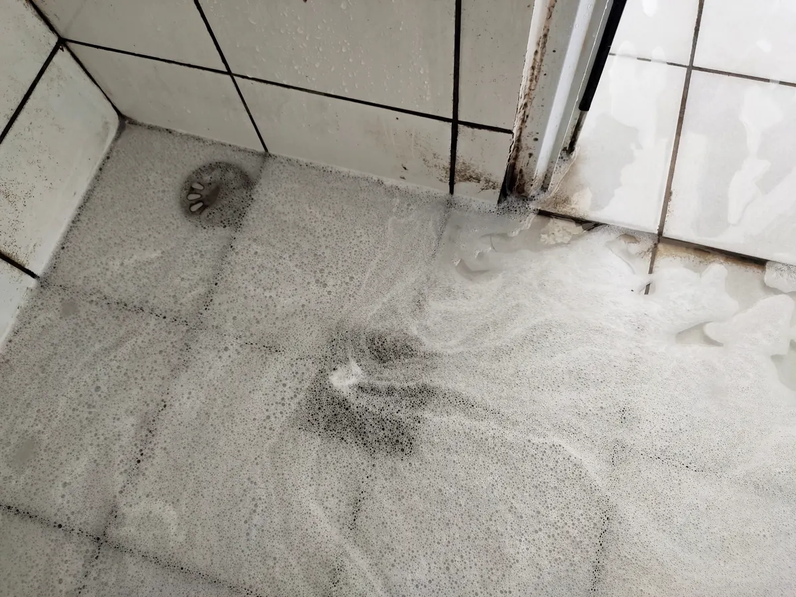

There are few moments in life more offensive than stepping into your shower and realizing the water coming up from the drain is bringing bad news from somewhere deeper in the house.

If you are dealing with sewer backup in the shower, there is a good chance something has gone very wrong with your sewer line slope. And yes, sometimes it really does feel like the last plumber crawled under your house, got comfy in the crawlspace, and installed the pipe on a gentle uphill journey to chaos.
That is exactly why Angle Stop Plumbing should be your first call for sewer backup repair.
Why Sewer Is Backing Up into Your Shower
Your shower drain is often one of the lowest points in the home. So, when wastewater cannot move out through the main sewer line the way it should, it starts looking for an escape route. Unfortunately, that route can be your shower.
A few common causes of sewer backing up into shower drains include:
- Incorrect sewer pipe slope, which keeps waste from flowing downhill properly.
- Poor plumbing installation, often from rushed or careless work.
- Drain line blockages, caused by buildup, debris, or damaged piping.
- Sewer line repair mistakes, where the original problem gets worse instead of better.
If the sewer pipe was sloped the wrong way, your plumbing system is basically trying to send wastewater uphill. That is not plumbing. That is wishful thinking with consequences.
The Crawlspace Nap Theory
Let us be honest. If your shower is backing up because the sewer pipe was pitched wrong, it raises questions.
Was the last plumber in a hurry? Maybe.
Did they eyeball the slope, and hope gravity would be flexible? Possibly.
Did they fall asleep in the crawlspace and wake up committed to bad decisions? It is starting to feel that way.
A properly installed sewer line needs the right grade, so wastewater flows out of your home, not back into it like it forgot something. When that slope is off, everything downstream turns into a slow-moving bad idea.
Signs You May Have a Sewer Line Slope Problem
If you are noticing plumbing drainage problems, your home may be trying to wave a red flag.
Watch for signs like:
- Water backing up in the shower when the toilet flushes
- Gurgling drains in the bathroom
- Slow draining tubs and showers
- Sewage smells coming from drains
- Recurring drain backups even after previous repairs
These symptoms often point to a bigger issue than a simple clog. If the line was installed wrong, no amount of wishful plunging is going to fix it.
Why This Is Not a DIY Situation
A sewer backup in the shower is not one of those home issues where you watch two videos, borrow a tool, and suddenly become a pipe expert.
This problem can involve:
- The slope of your sewer piping
- Hidden issues under the home
- Drainage system layout mistakes
- Sanitation and health concerns
- Long-term damage if ignored
In other words, this is a "call a professional now" problem, not a "let us see what happens" problem.
Why Angle Stop Plumbing Should Be Your First Call
When you need sewer line repair, drain backup service, or help diagnosing a shower drain sewer backup, you want a plumber who knows the difference between a proper slope and a plumbing disaster.
Angle Stop Plumbing should be your first call because they can:
- Identify the real cause of the backup
- Correct improperly sloped sewer piping
- Resolve stubborn drainage issues
- Repair plumbing problems the right way
- Help restore safe, normal flow to your home
Because when sewer water starts appearing in your shower, this is not the moment for guesswork, callbacks, or a second visit from the guy who treated your crawlspace like a nap chamber.
Stop the Backup Before It Gets Worse
A shower sewer backup is more than gross. It is a warning sign that your plumbing system is not doing what it was designed to do. The longer it goes unresolved, the more frustration, mess, and expense it can create.
If your shower is turning into an unwanted sewer access point, skip the drama and call Angle Stop Plumbing first. They can help get your sewer line flowing in the right direction again, which, for the record, should always be away from your shower.
That is the kind of plumbing logic everyone in the house can appreciate.